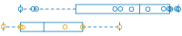

| ID | Image | logFC | p-Value | Adjusted p-Value |
|---|---|---|---|---|
| ID | Image | logFC | p-Value | Adjusted p-Value |
| PSMA8-002 | 5.720 | 8.50e-60 | 1.16e-55 | |
| KDM5C-005 | -0.786 | 8.89e-51 | 6.05e-47 | |
| KDM6A-001 | -0.851 | 1.55e-37 | 7.03e-34 | |
| ZFX-002 | -0.772 | 2.03e-29 | 6.92e-26 | |
| SEPT10-001 |  | -2.980 | 2.56e-26 | 6.96e-23 |
| SMC1A-001 | -0.669 | 4.92e-26 | 1.12e-22 | |
| IGHV6-1-001 | 10.100 | 1.71e-25 | 3.02e-22 | |
| NEIL1-004 | 2.450 | 1.77e-25 | 3.02e-22 | |
| CD72-001 | 1.530 | 1.18e-23 | 1.78e-20 | |
| EIF1AX-001 | -0.700 | 7.55e-23 | 9.89e-20 | |
| RPS4X-001 | -0.789 | 7.99e-23 | 9.89e-20 | |
| IGKV1-6-001 | 10.500 | 3.92e-22 | 4.45e-19 | |
| NAP1L2-001 | -3.760 | 6.99e-22 | 7.31e-19 | |
| LTBR-001 | 3.340 | 2.65e-21 | 2.58e-18 | |
| BLVRA-002 | -1.110 | 1.22e-19 | 1.11e-16 | |
| EHD1-001 | -0.816 | 2.55e-19 | 2.17e-16 | |
| ABCA12-001 | -3.070 | 9.42e-19 | 7.54e-16 | |
| PITPNC1-202 | -2.480 | 3.79e-18 | 2.87e-15 | |
| ZRSR2-001 | -0.565 | 5.87e-15 | 4.21e-12 | |
| IGKV3-20-001 | -8.540 | 8.70e-15 | 5.92e-12 | |
| ZYG11A-001 | -3.540 | 1.08e-14 | 6.97e-12 | |
| EMB-001 | 1.170 | 9.97e-14 | 6.16e-11 | |
| HDHD1-001 | -0.744 | 1.66e-13 | 9.84e-11 | |
| MAP1B-001 | 2.190 | 4.55e-13 | 2.58e-10 | |
| SIT1-001 | 0.677 | 5.14e-13 | 2.80e-10 | |
| MEST-001 | 1.930 | 3.69e-12 | 1.93e-09 | |
| TNFRSF8-001 | -1.060 | 4.08e-12 | 2.06e-09 | |
| USP9X-001 | -0.339 | 5.97e-12 | 2.90e-09 | |
| PYHIN1-001 | 1.610 | 6.85e-12 | 3.21e-09 | |
| SPESP1-001 | 7.350 | 1.15e-11 | 5.20e-09 | |
| DST-202 | -0.876 | 1.77e-11 | 7.77e-09 | |
| VOPP1-001 | -0.494 | 2.25e-11 | 9.33e-09 | |
| ELL2-001 | -0.954 | 2.26e-11 | 9.33e-09 | |
| NPNT-009 | -4.440 | 2.46e-11 | 9.83e-09 | |
| TP63-004 | -2.500 | 2.62e-11 | 1.02e-08 | |
| DDX3X-001 | -0.375 | 2.99e-11 | 1.13e-08 | |
| LZTS2-001 | 1.030 | 3.95e-11 | 1.45e-08 | |
| AASS-003 | -3.740 | 4.48e-11 | 1.60e-08 | |
| XPNPEP1-202 | 0.344 | 5.54e-11 | 1.93e-08 | |
| PLD4-004 | 2.120 | 6.29e-11 | 2.14e-08 | |
| CEND1-001 | -1.770 | 6.98e-11 | 2.32e-08 | |
| ZMYND8-014 | 0.367 | 7.21e-11 | 2.33e-08 | |
| KCNMA1-203 | -5.800 | 7.48e-11 | 2.37e-08 | |
| SRP14-001 | 0.220 | 1.07e-10 | 3.32e-08 | |
| GATM-001 | 0.964 | 1.17e-10 | 3.52e-08 | |
| TEX9-001 | -1.270 | 1.34e-10 | 3.95e-08 | |
| BCAR1-008 | 0.943 | 1.97e-10 | 5.70e-08 | |
| NLGN4X-202 | 7.730 | 2.22e-10 | 6.30e-08 | |
| LOXL3-001 | -1.010 | 2.28e-10 | 6.33e-08 | |
| TPRG1-001 | -1.960 | 2.40e-10 | 6.54e-08 | |
| LCA5-002 | -2.680 | 3.38e-10 | 9.03e-08 | |
| IGF2BP1-001 | 3.490 | 3.48e-10 | 9.11e-08 | |
| TOX-001 | -4.260 | 5.15e-10 | 1.32e-07 | |
| CYP1B1-001 | -1.820 | 6.70e-10 | 1.69e-07 | |
| PRKCE-001 |  | 0.890 | 7.97e-10 | 1.97e-07 |
| TIFA-002 | -0.451 | 9.39e-10 | 2.28e-07 | |
| ZYG11B-001 | -0.588 | 1.34e-09 | 3.19e-07 | |
| C20orf194-001 | 1.800 | 1.37e-09 | 3.22e-07 | |
| ACSS2-001 | -1.710 | 1.44e-09 | 3.31e-07 | |
| PALD1-201 |  | 1.200 | 1.63e-09 | 3.70e-07 |
| IGLV1-47-001 | -9.600 | 1.82e-09 | 4.03e-07 | |
| MAP3K4-001 | -0.491 | 1.84e-09 | 4.03e-07 | |
| RNF144A-001 | 2.350 | 2.29e-09 | 4.95e-07 | |
| DNAJC18-001 | -1.050 | 2.53e-09 | 5.38e-07 | |
| IL1A-001 | -3.610 | 2.78e-09 | 5.83e-07 | |
| NUDT4-001 | -0.478 | 2.89e-09 | 5.97e-07 | |
| CDIP1-005 | 1.650 | 2.96e-09 | 6.02e-07 | |
| FAM26F-001 | 1.290 | 3.09e-09 | 6.19e-07 | |
| CNOT6L-201 | -1.110 | 3.89e-09 | 7.67e-07 | |
| ZNF711-003 |  | -3.170 | 4.49e-09 | 8.53e-07 |
| DNAJC1-001 | -0.544 | 4.51e-09 | 8.53e-07 | |
| CDK5R1-001 | 1.120 | 4.51e-09 | 8.53e-07 | |
| ARHGAP31-001 | -0.712 | 4.64e-09 | 8.65e-07 | |
| ARL4C-001 | 1.350 | 4.73e-09 | 8.66e-07 | |
| NR2F2-001 | 3.400 | 4.77e-09 | 8.66e-07 | |
| LPAR5-201 | 1.000 | 5.85e-09 | 1.05e-06 | |
| BCL9L-001 | -0.627 | 6.80e-09 | 1.20e-06 | |
| PNPLA4-201 | -0.709 | 8.65e-09 | 1.51e-06 | |
| VASH2-013 | -1.120 | 8.96e-09 | 1.54e-06 | |
| IGLV4-69-001 | -8.330 | 1.02e-08 | 1.72e-06 | |
| IGHV1-24-001 | -7.630 | 1.03e-08 | 1.72e-06 | |
| PTPRCAP-001 | 0.468 | 1.22e-08 | 2.02e-06 | |
| TMEM106B-002 | -0.937 | 1.36e-08 | 2.23e-06 | |
| SLC16A10-001 | -1.480 | 1.51e-08 | 2.45e-06 | |
| CGN-001 | -1.970 | 1.76e-08 | 2.82e-06 | |
| EIF2S3-001 | -0.437 | 1.80e-08 | 2.84e-06 | |
| CYB5A-001 | -0.951 | 1.86e-08 | 2.91e-06 | |
| C3orf14-004 |  | 3.570 | 2.24e-08 | 3.43e-06 |
| SOWAHC-001 | -2.320 | 2.27e-08 | 3.43e-06 | |
| ABI3-001 | 0.459 | 2.28e-08 | 3.43e-06 | |
| UBA1-002 | -0.421 | 2.29e-08 | 3.43e-06 | |
| SSBP3-002 | -0.591 | 2.36e-08 | 3.48e-06 | |
| CFLAR-001 | -0.997 | 2.75e-08 | 4.02e-06 | |
| PIM2-001 | -1.110 | 2.95e-08 | 4.28e-06 | |
| MARK1-002 | -4.580 | 3.13e-08 | 4.48e-06 | |
| DGAT2-201 | -0.743 | 3.20e-08 | 4.53e-06 | |
| DOCK6-001 | 1.370 | 3.63e-08 | 5.10e-06 | |
| HDAC1-001 | 0.269 | 4.08e-08 | 5.66e-06 | |
| ACVR1B-007 | 2.190 | 4.19e-08 | 5.76e-06 | |
| LAMP5-001 | -2.740 | 4.80e-08 | 6.53e-06 | |
| TPM2-006 | 4.620 | 5.61e-08 | 7.55e-06 | |
| EXOC3-001 | 0.295 | 7.04e-08 | 9.39e-06 | |
| PCDHGA11-001 | -0.895 | 7.37e-08 | 9.67e-06 | |
| STK38L-001 | -0.559 | 7.39e-08 | 9.67e-06 | |
| PRR13-011 | 0.277 | 7.66e-08 | 9.93e-06 | |
| PBX4-001 | -1.650 | 7.75e-08 | 9.94e-06 | |
| MYO7B-201 | 1.990 | 7.90e-08 | 1.00e-05 | |
| HIVEP1-001 | -0.731 | 8.10e-08 | 1.02e-05 | |
| PPM1A-201 | -0.587 | 8.19e-08 | 1.02e-05 | |
| IGLV6-57-001 | -5.800 | 8.67e-08 | 1.07e-05 | |
| TRPV3-002 | -1.790 | 9.67e-08 | 1.18e-05 | |
| PTPN7-001 | 0.340 | 9.72e-08 | 1.18e-05 | |
| SLC37A1-004 | -0.530 | 1.16e-07 | 1.40e-05 | |
| UNC13C-202 | -2.690 | 1.25e-07 | 1.49e-05 | |
| NEDD4-006 | -1.170 | 1.27e-07 | 1.50e-05 | |
| POF1B-002 | -2.820 | 1.36e-07 | 1.59e-05 | |
| C11orf21-004 | 5.270 | 1.47e-07 | 1.71e-05 | |
| IGLV1-51-001 |  | 5.630 | 1.54e-07 | 1.78e-05 |
| IL1R2-002 | -3.270 | 1.73e-07 | 1.98e-05 | |
| NAPG-001 | 0.445 | 1.83e-07 | 2.07e-05 | |
| DOK3-001 | 0.566 | 1.84e-07 | 2.07e-05 | |
| CREB3L1-001 | -2.470 | 1.92e-07 | 2.15e-05 | |
| A1BG-001 | -1.650 | 1.97e-07 | 2.18e-05 | |
| EPHB2-001 |  | -2.710 | 2.07e-07 | 2.27e-05 |
| SELPLG-001 | -1.090 | 2.39e-07 | 2.60e-05 | |
| FSTL3-001 |  | -2.150 | 2.43e-07 | 2.62e-05 |
| P2RY10-001 | -0.515 | 2.66e-07 | 2.85e-05 | |
| TXLNG-001 | -0.382 | 3.20e-07 | 3.40e-05 | |
| ARMCX1-001 | 3.310 | 3.33e-07 | 3.51e-05 | |
| AKAP3-201 | -1.040 | 3.49e-07 | 3.65e-05 | |
| AHNAK-005 | -1.740 | 3.55e-07 | 3.69e-05 | |
| ARHGAP4-001 | 0.253 | 3.92e-07 | 4.04e-05 | |
| CPS1-001 | -2.420 | 4.64e-07 | 4.75e-05 | |
| APOBR-001 | 0.944 | 4.88e-07 | 4.95e-05 | |
| S100A6-008 | -1.410 | 5.01e-07 | 5.05e-05 | |
| PTPRN2-005 | 2.430 | 5.23e-07 | 5.23e-05 | |
| CASS4-001 | 2.660 | 6.07e-07 | 6.03e-05 | |
| IGLV2-23-001 | -6.750 | 6.27e-07 | 6.18e-05 | |
| NDST1-002 | 0.410 | 6.62e-07 | 6.48e-05 | |
| ZNF789-004 | 0.634 | 6.96e-07 | 6.77e-05 | |
| FRMD4A-003 | 1.170 | 7.68e-07 | 7.41e-05 | |
| MAD1L1-003 | 0.363 | 8.17e-07 | 7.82e-05 | |
| VPREB3-001 | 1.240 | 8.45e-07 | 8.04e-05 | |
| SFMBT2-202 | 0.413 | 8.89e-07 | 8.40e-05 | |
| DBN1-004 | 1.330 | 9.06e-07 | 8.46e-05 | |
| EXOC6B-001 | -0.906 | 9.08e-07 | 8.46e-05 | |
| ARPC1B-001 | 0.273 | 9.22e-07 | 8.54e-05 | |
| ALOX5-001 | 0.712 | 9.32e-07 | 8.56e-05 | |
| IL6-001 | -4.060 | 9.43e-07 | 8.61e-05 | |
| STRIP2-001 | -1.130 | 9.51e-07 | 8.62e-05 | |
| THY1-001 | -5.120 | 9.80e-07 | 8.83e-05 | |
| GALNT5-001 |  | -5.370 | 1.02e-06 | 9.15e-05 |
| SH3PXD2A-001 | -0.444 | 1.03e-06 | 9.15e-05 | |
| TDRKH-002 |  | -0.951 | 1.04e-06 | 9.15e-05 |
| C4orf34-001 | 1.040 | 1.04e-06 | 9.15e-05 | |
| MOCOS-001 | 2.950 | 1.07e-06 | 9.37e-05 | |
| PKHD1L1-001 | 0.912 | 1.17e-06 | 1.01e-04 | |
| TMEM119-001 | -4.920 | 1.22e-06 | 1.05e-04 | |
| TPBG-202 | -3.030 | 1.29e-06 | 1.10e-04 | |
| EXOC7-020 | 0.235 | 1.29e-06 | 1.10e-04 | |
| TRAF1-001 | -1.000 | 1.36e-06 | 1.15e-04 | |
| RAB24-006 | 0.481 | 1.43e-06 | 1.20e-04 | |
| RCBTB1-001 | 0.410 | 1.47e-06 | 1.23e-04 | |
| FEZ1-001 | -1.390 | 1.50e-06 | 1.24e-04 | |
| SIGLEC14-001 | -3.680 | 1.59e-06 | 1.31e-04 | |
| MFSD12-011 |  | 0.374 | 1.60e-06 | 1.31e-04 |
| CD99-001 | 0.666 | 1.78e-06 | 1.45e-04 | |
| ARID3A-001 | -0.379 | 1.95e-06 | 1.58e-04 | |
| GIPC2-001 | 2.910 | 2.00e-06 | 1.61e-04 | |
| PPEF1-001 | 4.610 | 2.01e-06 | 1.61e-04 | |
| PION-001 | 0.847 | 2.06e-06 | 1.64e-04 | |
| CD99L2-005 | -0.505 | 2.07e-06 | 1.64e-04 | |
| ZBTB20-003 | -2.450 | 2.08e-06 | 1.64e-04 | |
| KCNA3-001 | -1.180 | 2.10e-06 | 1.64e-04 | |
| BMP4-001 | -4.370 | 2.13e-06 | 1.66e-04 | |
| WDR19-001 | -0.619 | 2.24e-06 | 1.73e-04 | |
| ZNF790-001 | -0.781 | 2.37e-06 | 1.82e-04 | |
| SH2D2A-001 | 0.902 | 2.39e-06 | 1.83e-04 | |
| AICDA-001 | -1.710 | 2.68e-06 | 2.04e-04 | |
| NFATC1-009 | 1.040 | 2.71e-06 | 2.05e-04 | |
| FKBP15-001 | 0.352 | 2.76e-06 | 2.08e-04 | |
| TANC1-001 | -3.270 | 2.80e-06 | 2.09e-04 | |
| L1TD1-001 | 5.390 | 2.82e-06 | 2.09e-04 | |
| ATHL1-002 | 1.100 | 2.96e-06 | 2.19e-04 | |
| KLF7-001 | -0.972 | 3.33e-06 | 2.43e-04 | |
| SGK1-009 | -1.460 | 3.34e-06 | 2.43e-04 | |
| FRMD6-001 | -2.230 | 3.34e-06 | 2.43e-04 | |
| PRPSAP2-005 | 0.253 | 3.54e-06 | 2.57e-04 | |
| SELP-005 | 3.790 | 3.69e-06 | 2.65e-04 | |
| C1orf228-201 | 1.880 | 3.70e-06 | 2.65e-04 | |
| AHCYL2-012 | -0.681 | 3.79e-06 | 2.70e-04 | |
| PTPN12-001 | 0.506 | 3.83e-06 | 2.71e-04 | |
| C1orf85-001 | 0.642 | 3.87e-06 | 2.73e-04 | |
| IGHE-001 | -6.210 | 4.20e-06 | 2.95e-04 | |
| F5-002 | -1.530 | 4.22e-06 | 2.95e-04 | |
| AQP3-001 |  | -2.270 | 4.25e-06 | 2.95e-04 |
| ARHGAP9-002 | 0.477 | 4.44e-06 | 3.06e-04 | |
| PYCARD-001 | 0.663 | 4.47e-06 | 3.07e-04 | |
| ATP9A-003 | -4.480 | 4.64e-06 | 3.17e-04 | |
| CAV2-001 | -6.260 | 4.86e-06 | 3.31e-04 | |
| PLXNA1-001 | -0.645 | 5.09e-06 | 3.45e-04 | |
| MAGEE1-001 | -1.290 | 5.13e-06 | 3.45e-04 | |
| AFAP1L2-002 | -1.850 | 5.33e-06 | 3.57e-04 | |
| GPR125-001 | -2.830 | 5.49e-06 | 3.66e-04 | |
| IGHV3-43-001 | 6.350 | 5.55e-06 | 3.69e-04 | |
| NRP2-202 | -2.320 | 5.80e-06 | 3.82e-04 | |
| GLUD1-001 | 0.195 | 5.81e-06 | 3.82e-04 | |
| IGLV2-11-001 | -6.100 | 5.84e-06 | 3.82e-04 | |
| TOMM6-001 |  | 0.264 | 5.92e-06 | 3.85e-04 |
| DIP2C-001 | 2.510 | 5.96e-06 | 3.86e-04 | |
| ZNF331-001 | 0.448 | 6.06e-06 | 3.91e-04 | |
| ZNF287-001 | -0.476 | 6.18e-06 | 3.97e-04 | |
| ZFHX4-002 | -3.060 | 6.69e-06 | 4.27e-04 | |
| RAB20-001 | 1.640 | 6.76e-06 | 4.30e-04 | |
| DDX59-002 | -0.341 | 6.80e-06 | 4.30e-04 | |
| EXPH5-001 | -1.180 | 6.83e-06 | 4.30e-04 | |
| SLC35F2-202 | -0.330 | 6.94e-06 | 4.35e-04 | |
| STAT3-001 | -0.404 | 6.98e-06 | 4.36e-04 | |
| NLRP2-001 | -3.950 | 7.20e-06 | 4.47e-04 | |
| WDR65-002 | -1.340 | 7.25e-06 | 4.48e-04 | |
| SIGLEC5-201 | 1.830 | 7.38e-06 | 4.55e-04 | |
| ZHX1-201 |  | -0.242 | 7.45e-06 | 4.57e-04 |
| TFPT-003 | 0.410 | 7.59e-06 | 4.63e-04 | |
| BEX5-001 | -3.640 | 7.70e-06 | 4.67e-04 | |
| JAKMIP1-006 | -2.690 | 7.73e-06 | 4.68e-04 | |
| LIMD2-001 | 0.395 | 7.88e-06 | 4.74e-04 | |
| GPX1-001 | 0.472 | 7.92e-06 | 4.74e-04 | |
| TRPM2-004 |  | 1.360 | 8.16e-06 | 4.87e-04 |
| GDF11-001 | 1.240 | 8.44e-06 | 5.02e-04 | |
| AHNAK2-001 | 1.780 | 8.49e-06 | 5.02e-04 | |
| DDX60-001 |  | 0.971 | 8.65e-06 | 5.09e-04 |
| CSF2RB-001 | -1.140 | 9.09e-06 | 5.33e-04 | |
| PLEKHH1-001 | 1.630 | 9.22e-06 | 5.39e-04 | |
| IVL-001 | -2.180 | 9.36e-06 | 5.44e-04 | |
| ZFP30-201 | -0.460 | 9.45e-06 | 5.46e-04 | |
| BAMBI-001 | 4.050 | 9.47e-06 | 5.46e-04 | |
| NABP1-001 | -0.562 | 1.00e-05 | 5.74e-04 | |
| PPP2CA-001 | -0.165 | 1.00e-05 | 5.74e-04 | |
| LGALS9B-201 | 2.750 | 1.01e-05 | 5.76e-04 | |
| BMPR1A-001 | 0.574 | 1.04e-05 | 5.87e-04 | |
| JAKMIP2-001 | -3.690 | 1.04e-05 | 5.87e-04 | |
| GALNT14-001 | -5.680 | 1.04e-05 | 5.87e-04 | |
| CTSH-001 | -0.576 | 1.09e-05 | 6.06e-04 | |
| TIGIT-001 | 2.370 | 1.09e-05 | 6.06e-04 | |
| LYSMD1-001 | -0.731 | 1.09e-05 | 6.06e-04 | |
| FAM203B-001 | 4.870 | 1.10e-05 | 6.06e-04 | |
| CAV1-001 | -2.980 | 1.11e-05 | 6.07e-04 | |
| MX2-001 | 0.701 | 1.11e-05 | 6.07e-04 | |
| ZYX-001 | 0.425 | 1.11e-05 | 6.07e-04 | |
| IGF1-001 | 1.560 | 1.12e-05 | 6.07e-04 | |
| ZNF37A-201 | -0.304 | 1.17e-05 | 6.32e-04 | |
| HGF-001 | -5.100 | 1.21e-05 | 6.51e-04 | |
| ADM-002 | -2.990 | 1.21e-05 | 6.51e-04 | |
| NQO2-002 | -1.390 | 1.22e-05 | 6.51e-04 | |
| NAGA-003 | -0.408 | 1.28e-05 | 6.84e-04 | |
| LST1-001 | 1.310 | 1.30e-05 | 6.91e-04 | |
| EVL-001 | 0.479 | 1.37e-05 | 7.25e-04 | |
| RTFDC1-001 |  | 0.220 | 1.42e-05 | 7.46e-04 |
| RFX7-203 | -0.276 | 1.42e-05 | 7.46e-04 | |
| ZDHHC20-001 | -0.233 | 1.48e-05 | 7.73e-04 | |
| ZNF567-001 | -0.565 | 1.54e-05 | 8.04e-04 | |
| MPEG1-001 | 1.220 | 1.60e-05 | 8.30e-04 | |
| ABCD2-001 |  | -0.640 | 1.61e-05 | 8.30e-04 |
| WNT5A-001 | -3.010 | 1.61e-05 | 8.30e-04 | |
| PON2-002 | 1.170 | 1.62e-05 | 8.30e-04 | |
| PIK3R5-201 | -1.030 | 1.67e-05 | 8.54e-04 | |
| CCDC137-003 |  | 0.343 | 1.69e-05 | 8.60e-04 |
| MREG-001 | -0.536 | 1.70e-05 | 8.61e-04 | |
| TCEAL3-201 | -0.376 | 1.73e-05 | 8.73e-04 | |
| SNAPC5-008 | 0.555 | 1.77e-05 | 8.94e-04 | |
| ANKRD50-002 | -1.590 | 1.95e-05 | 9.79e-04 | |
| SMARCA1-004 | 3.740 | 1.99e-05 | 9.94e-04 | |
| PLEKHB2-202 | 0.351 | 2.01e-05 | 1.00e-03 | |
| LAMB1-001 | 3.270 | 2.05e-05 | 1.02e-03 | |
| CTH-001 | -0.667 | 2.17e-05 | 1.07e-03 | |
| L3MBTL4-201 | -1.060 | 2.18e-05 | 1.07e-03 | |
| RECK-001 | -1.170 | 2.21e-05 | 1.08e-03 | |
| IGHV1-8-001 | -6.550 | 2.21e-05 | 1.08e-03 | |
| TRAPPC2-202 | -0.604 | 2.24e-05 | 1.09e-03 | |
| UGGT2-001 | 0.381 | 2.26e-05 | 1.10e-03 | |
| RYK-001 | 0.429 | 2.38e-05 | 1.15e-03 | |
| ZNF493-002 | 0.518 | 2.44e-05 | 1.18e-03 | |
| MEF2B-005 | 1.070 | 2.46e-05 | 1.18e-03 | |
| JAG1-001 | 1.110 | 2.52e-05 | 1.21e-03 | |
| PCDHGB2-001 | 1.720 | 2.70e-05 | 1.28e-03 | |
| UHRF1BP1-001 | -0.387 | 2.70e-05 | 1.28e-03 | |
| SEMA4A-002 | -0.414 | 2.76e-05 | 1.31e-03 | |
| TRAF5-201 | 0.421 | 2.77e-05 | 1.31e-03 | |
| MGAT4A-001 | -1.310 | 2.87e-05 | 1.35e-03 | |
| SPPL2A-001 | -0.341 | 2.89e-05 | 1.36e-03 | |
| C2orf74-202 | 0.832 | 2.99e-05 | 1.40e-03 | |
| PLA2G4A-001 | -1.610 | 3.01e-05 | 1.40e-03 | |
| MAP2K4-002 | -0.242 | 3.05e-05 | 1.42e-03 | |
| TSEN34-001 |  | 0.381 | 3.07e-05 | 1.42e-03 |
| CLIP1-001 | -0.479 | 3.08e-05 | 1.42e-03 | |
| TBC1D8-011 | 1.920 | 3.09e-05 | 1.42e-03 | |
| PLEKHG2-001 | 0.311 | 3.22e-05 | 1.48e-03 | |
| IGKV1-17-001 | 8.360 | 3.63e-05 | 1.65e-03 | |
| OSBPL10-001 | -5.450 | 3.63e-05 | 1.65e-03 | |
| PLIN3-001 | 0.329 | 3.68e-05 | 1.67e-03 | |
| MAP4K4-202 | -1.010 | 3.75e-05 | 1.69e-03 | |
| AEBP1-001 | 2.500 | 3.83e-05 | 1.72e-03 | |
| CLCN4-001 | 2.580 | 3.83e-05 | 1.72e-03 | |
| SCARB2-001 | -0.969 | 4.03e-05 | 1.80e-03 | |
| RIPK1-201 | -0.324 | 4.14e-05 | 1.84e-03 | |
| AKAP6-001 | -2.250 | 4.14e-05 | 1.84e-03 | |
| AMN-001 | 2.090 | 4.15e-05 | 1.84e-03 | |
| ILDR2-001 | -1.550 | 4.22e-05 | 1.87e-03 | |
| CCDC126-003 | -1.230 | 4.31e-05 | 1.90e-03 | |
| TET1-001 | 1.080 | 4.32e-05 | 1.90e-03 | |
| COL4A3-001 | -2.880 | 4.53e-05 | 1.98e-03 | |
| DCTN2-001 |  | -0.175 | 4.56e-05 | 1.99e-03 |
| SLC9A3-001 | 1.020 | 4.65e-05 | 2.02e-03 | |
| PSTPIP2-002 | 1.050 | 4.69e-05 | 2.03e-03 | |
| CXCL10-001 | -2.570 | 4.95e-05 | 2.14e-03 | |
| PTGS2-001 | -3.840 | 5.07e-05 | 2.18e-03 | |
| F2R-001 | -1.410 | 5.08e-05 | 2.18e-03 | |
| MYOF-201 | 3.040 | 5.09e-05 | 2.18e-03 | |
| OTOGL-201 | -3.110 | 5.18e-05 | 2.20e-03 | |
| PPP3CC-001 | -0.387 | 5.18e-05 | 2.20e-03 | |
| UHRF1BP1L-001 | -0.228 | 5.26e-05 | 2.23e-03 | |
| MYO10-001 |  | 3.300 | 5.39e-05 | 2.28e-03 |
| EMR2-001 | 1.350 | 5.50e-05 | 2.32e-03 | |
| IGKV1-27-001 | 6.150 | 5.53e-05 | 2.32e-03 | |
| C1orf61-017 | -2.190 | 5.69e-05 | 2.38e-03 | |
| ZNF608-001 | -1.300 | 5.71e-05 | 2.38e-03 | |
| SEC14L1-002 | -0.380 | 5.72e-05 | 2.38e-03 | |
| FAM221A-001 | -0.723 | 5.92e-05 | 2.45e-03 | |
| EYA2-005 | -7.110 | 6.07e-05 | 2.51e-03 | |
| FAM78B-001 | -1.730 | 6.12e-05 | 2.52e-03 | |
| PABPC4-004 | -0.425 | 6.15e-05 | 2.53e-03 | |
| IGHD-001 | 2.040 | 6.17e-05 | 2.53e-03 | |
| FAM18A-001 | -1.890 | 6.19e-05 | 2.53e-03 | |
| ZMYM3-005 | 0.345 | 6.21e-05 | 2.53e-03 | |
| VSIG10-001 | 1.590 | 6.26e-05 | 2.54e-03 | |
| SUSD1-003 | 0.472 | 6.32e-05 | 2.56e-03 | |
| YIPF5-002 |  | -0.263 | 6.51e-05 | 2.63e-03 |
| CES2-001 | 0.225 | 6.65e-05 | 2.68e-03 | |
| KIAA0930-004 | 0.390 | 6.77e-05 | 2.72e-03 | |
| XKRX-201 | -4.430 | 7.00e-05 | 2.80e-03 | |
| EIF1-001 | -0.275 | 7.08e-05 | 2.82e-03 | |
| MACF1-031 |  | -0.460 | 7.12e-05 | 2.83e-03 |
| ARHGEF35-001 | 0.745 | 7.36e-05 | 2.91e-03 | |
| ARHGAP29-001 | -3.780 | 7.37e-05 | 2.91e-03 | |
| MRPL16-001 | 0.221 | 7.50e-05 | 2.96e-03 | |
| FMNL1-201 | -0.288 | 7.66e-05 | 3.01e-03 | |
| STK10-201 | 0.243 | 7.70e-05 | 3.02e-03 | |
| PPP4R4-001 | -4.200 | 7.92e-05 | 3.09e-03 | |
| FUCA2-001 | 0.836 | 7.92e-05 | 3.09e-03 | |
| HECTD2-005 | -1.570 | 8.08e-05 | 3.14e-03 | |
| PITPNM2-005 | 1.400 | 8.20e-05 | 3.17e-03 | |
| FOXO3-001 | -1.290 | 8.21e-05 | 3.17e-03 | |
| PHLPP1-001 | 0.813 | 8.41e-05 | 3.24e-03 | |
| EMC9-001 | -0.456 | 8.52e-05 | 3.27e-03 | |
| EPS15L1-001 | 0.344 | 8.67e-05 | 3.32e-03 | |
| ABHD2-201 | -0.380 | 8.80e-05 | 3.36e-03 | |
| GTF2H2-001 | 0.536 | 8.82e-05 | 3.36e-03 | |
| NAB1-003 | -0.291 | 8.86e-05 | 3.36e-03 | |
| LGALS3BP-001 | 2.680 | 8.87e-05 | 3.36e-03 | |
| SMAD7-001 | -0.832 | 8.88e-05 | 3.36e-03 | |
| FAM70A-001 | -2.720 | 8.95e-05 | 3.37e-03 | |
| TMEM164-003 | -0.614 | 9.16e-05 | 3.44e-03 | |
| LINGO3-201 | 0.959 | 9.17e-05 | 3.44e-03 | |
| MIOS-001 | 0.266 | 9.21e-05 | 3.44e-03 | |
| BBS2-001 | -0.560 | 9.45e-05 | 3.52e-03 | |
| SYNE3-005 | -0.491 | 9.53e-05 | 3.54e-03 | |
| ACVR2A-002 | -1.360 | 9.62e-05 | 3.57e-03 | |
| FZD3-001 | -0.793 | 9.74e-05 | 3.60e-03 | |
| S100A9-001 | -3.570 | 9.87e-05 | 3.63e-03 | |
| TNFAIP6-001 | -2.570 | 9.88e-05 | 3.63e-03 | |
| MAGI3-001 | -2.010 | 9.99e-05 | 3.67e-03 | |
| PAG1-001 | -0.851 | 1.01e-04 | 3.68e-03 | |
| C9orf16-001 | 0.389 | 1.02e-04 | 3.71e-03 | |
| PRKD1-002 | -4.010 | 1.07e-04 | 3.87e-03 | |
| TEAD4-001 | 2.120 | 1.07e-04 | 3.87e-03 | |
| CDC42BPB-001 | -0.534 | 1.07e-04 | 3.88e-03 | |
| BCL3-001 | -0.523 | 1.10e-04 | 3.96e-03 | |
| ACADM-005 | 0.323 | 1.11e-04 | 4.01e-03 | |
| G3BP1-002 | -0.176 | 1.13e-04 | 4.05e-03 | |
| PCGF3-004 | 0.319 | 1.15e-04 | 4.10e-03 | |
| TRIM6-TRIM34-001 | 0.598 | 1.15e-04 | 4.11e-03 | |
| NR3C1-001 | -0.443 | 1.16e-04 | 4.11e-03 | |
| NUAK2-001 | -3.430 | 1.16e-04 | 4.11e-03 | |
| CCL22-001 | -1.750 | 1.18e-04 | 4.17e-03 | |
| TNS1-001 |  | 3.470 | 1.18e-04 | 4.17e-03 |
| RASA3-001 | 0.441 | 1.19e-04 | 4.19e-03 | |
| IL12B-001 | -2.400 | 1.19e-04 | 4.20e-03 | |
| KIAA1217-004 | -1.120 | 1.21e-04 | 4.24e-03 | |
| CACNA2D4-001 | 2.290 | 1.23e-04 | 4.30e-03 | |
| TBC1D10A-002 | -0.436 | 1.23e-04 | 4.30e-03 | |
| TPK1-001 | 0.523 | 1.24e-04 | 4.32e-03 | |
| TNFRSF1A-001 | 0.839 | 1.25e-04 | 4.32e-03 | |
| TMCC2-001 | -3.800 | 1.26e-04 | 4.37e-03 | |
| IGLV3-25-001 | 6.000 | 1.28e-04 | 4.42e-03 | |
| NOTCH2-001 | -2.360 | 1.31e-04 | 4.52e-03 | |
| LATS2-001 | 0.731 | 1.34e-04 | 4.60e-03 | |
| NT5C1A-001 | -3.160 | 1.35e-04 | 4.62e-03 | |
| SLC6A4-002 | -1.160 | 1.35e-04 | 4.62e-03 | |
| PALLD-001 | 2.720 | 1.35e-04 | 4.62e-03 | |
| CAMK4-004 | -0.865 | 1.37e-04 | 4.64e-03 | |
| ARHGAP10-001 | -0.603 | 1.37e-04 | 4.64e-03 | |
| UGT2B15-001 |  | 5.830 | 1.37e-04 | 4.65e-03 |
| SNUPN-003 | 0.209 | 1.39e-04 | 4.69e-03 | |
| DERL1-001 | -0.367 | 1.41e-04 | 4.75e-03 | |
| FAM129A-001 | -1.160 | 1.44e-04 | 4.82e-03 | |
| GPR25-001 | -4.440 | 1.46e-04 | 4.88e-03 | |
| SLC2A8-005 | -0.596 | 1.48e-04 | 4.94e-03 | |
| ATF7IP2-202 | 0.371 | 1.48e-04 | 4.94e-03 | |
| CCR6-001 | 1.310 | 1.49e-04 | 4.94e-03 | |
| IRF4-001 | -0.343 | 1.49e-04 | 4.94e-03 | |
| TRIM47-001 | -2.200 | 1.50e-04 | 4.95e-03 | |
| NR4A1-203 | 0.841 | 1.51e-04 | 4.98e-03 | |
| MTHFD2-001 |  | -0.269 | 1.53e-04 | 5.03e-03 |
| FAM49B-002 | 0.383 | 1.54e-04 | 5.05e-03 | |
| SPTLC3-006 | 2.940 | 1.54e-04 | 5.06e-03 | |
| OVCH1-001 | 4.500 | 1.57e-04 | 5.13e-03 | |
| GPR18-202 | 1.660 | 1.58e-04 | 5.13e-03 | |
| TMTC4-004 | 0.540 | 1.58e-04 | 5.13e-03 | |
| SLC9A5-001 | 1.340 | 1.58e-04 | 5.14e-03 | |
| GAMT-001 | 0.983 | 1.59e-04 | 5.15e-03 | |
| MAPK8-201 | -0.484 | 1.62e-04 | 5.22e-03 | |
| FBXO25-001 | -0.322 | 1.63e-04 | 5.24e-03 | |
| DLGAP1-001 | -3.430 | 1.63e-04 | 5.24e-03 | |
| LRWD1-001 | -0.684 | 1.64e-04 | 5.28e-03 | |
| KIAA1704-201 | 0.219 | 1.67e-04 | 5.36e-03 | |
| CDKL5-002 | 1.930 | 1.68e-04 | 5.37e-03 | |
| TM2D3-001 | -0.357 | 1.69e-04 | 5.39e-03 | |
| GRIA1-001 | -5.250 | 1.70e-04 | 5.40e-03 | |
| FAM78A-001 |  | 0.298 | 1.70e-04 | 5.40e-03 |
| MYL9-001 | 2.140 | 1.72e-04 | 5.43e-03 | |
| PPHLN1-010 | 0.174 | 1.72e-04 | 5.44e-03 | |
| PLEKHG6-003 | -1.080 | 1.77e-04 | 5.59e-03 | |
| IFI16-002 | 0.254 | 1.79e-04 | 5.62e-03 | |
| NCR3-001 | 0.825 | 1.80e-04 | 5.64e-03 | |
| FOXP4-002 | -0.471 | 1.81e-04 | 5.64e-03 | |
| MGAT3-001 | 0.603 | 1.81e-04 | 5.64e-03 | |
| RUFY3-002 | 0.616 | 1.82e-04 | 5.66e-03 | |
| XPO5-001 | -0.168 | 1.86e-04 | 5.77e-03 | |
| NXN-001 | -2.770 | 1.86e-04 | 5.78e-03 | |
| ST3GAL5-003 | 1.030 | 1.88e-04 | 5.82e-03 | |
| PYGL-001 | -1.490 | 1.89e-04 | 5.82e-03 | |
| BMP6-001 |  | -2.500 | 1.89e-04 | 5.82e-03 |
| CHSY1-001 | 0.406 | 1.90e-04 | 5.83e-03 | |
| VPS54-001 | -0.334 | 1.92e-04 | 5.88e-03 | |
| ANXA7-002 | -0.230 | 1.92e-04 | 5.88e-03 | |
| SPTBN2-201 |  | 1.150 | 1.94e-04 | 5.91e-03 |
| TRIP6-001 | 0.563 | 1.95e-04 | 5.94e-03 | |
| UNC93B1-201 | 0.325 | 2.00e-04 | 6.06e-03 | |
| ALDH1L1-007 |  | -4.520 | 2.01e-04 | 6.08e-03 |
| RNF19B-001 | -0.534 | 2.03e-04 | 6.15e-03 | |
| SYK-001 | 0.648 | 2.04e-04 | 6.15e-03 | |
| ADAM23-002 | -3.630 | 2.05e-04 | 6.18e-03 | |
| ADTRP-001 |  | -1.810 | 2.06e-04 | 6.19e-03 |
| PASK-004 | -0.486 | 2.12e-04 | 6.33e-03 | |
| TRIM25-201 | 0.245 | 2.12e-04 | 6.33e-03 | |
| AQP9-001 | -4.270 | 2.17e-04 | 6.48e-03 | |
| MPI-001 | 0.253 | 2.27e-04 | 6.75e-03 | |
| VDR-201 | -1.820 | 2.27e-04 | 6.75e-03 | |
| DNLZ-001 | 0.814 | 2.28e-04 | 6.75e-03 | |
| SIGMAR1-001 | -0.536 | 2.30e-04 | 6.79e-03 | |
| ICAM1-001 | -0.573 | 2.30e-04 | 6.79e-03 | |
| TDRD7-001 | -0.305 | 2.31e-04 | 6.79e-03 | |
| VPS52-001 | 0.191 | 2.31e-04 | 6.79e-03 | |
| TTF1-001 | 0.235 | 2.33e-04 | 6.82e-03 | |
| DNAH8-002 | -1.330 | 2.34e-04 | 6.83e-03 | |
| RPL39L-003 |  | -0.677 | 2.34e-04 | 6.83e-03 |
| POLR2G-001 | 0.213 | 2.35e-04 | 6.84e-03 | |
| C10orf137-007 | 0.505 | 2.36e-04 | 6.85e-03 | |
| STX7-001 | 0.284 | 2.39e-04 | 6.93e-03 | |
| IL27RA-001 | 0.657 | 2.39e-04 | 6.93e-03 | |
| CCDC85B-001 | 0.315 | 2.40e-04 | 6.93e-03 | |
| NIPSNAP1-001 | 0.384 | 2.41e-04 | 6.94e-03 | |
| FLNB-001 |  | -0.366 | 2.49e-04 | 7.16e-03 |
| KCNIP2-201 | -1.460 | 2.51e-04 | 7.20e-03 | |
| BCAS4-001 | 0.258 | 2.53e-04 | 7.24e-03 | |
| CES3-001 | 1.060 | 2.57e-04 | 7.36e-03 | |
| FILIP1L-001 | 0.804 | 2.62e-04 | 7.48e-03 | |
| IGHV4-31-001 | -5.690 | 2.63e-04 | 7.48e-03 | |
| DAPK1-008 | -1.670 | 2.64e-04 | 7.49e-03 | |
| ERP29-001 | 0.256 | 2.65e-04 | 7.52e-03 | |
| SARS-001 | -0.156 | 2.68e-04 | 7.59e-03 | |
| NAMPTL-001 | -0.760 | 2.71e-04 | 7.64e-03 | |
| RAP1A-001 | -0.283 | 2.77e-04 | 7.80e-03 | |
| ENTPD1-008 | 0.344 | 2.79e-04 | 7.84e-03 | |
| FOXP2-001 | -3.840 | 2.81e-04 | 7.89e-03 | |
| CRIP1-001 | -1.120 | 2.82e-04 | 7.89e-03 | |
| IGHV5-51-001 | 4.320 | 2.83e-04 | 7.89e-03 | |
| STRA6-001 | -1.810 | 2.83e-04 | 7.89e-03 | |
| XAF1-001 |  | 0.631 | 2.83e-04 | 7.89e-03 |
| PRF1-202 | 1.600 | 2.85e-04 | 7.92e-03 | |
| ZNF737-001 | 0.608 | 2.92e-04 | 8.09e-03 | |
| IGHA2-001 | -4.230 | 2.99e-04 | 8.27e-03 | |
| C9orf72-001 | -0.463 | 3.01e-04 | 8.31e-03 | |
| KHDRBS1-001 | 0.105 | 3.05e-04 | 8.41e-03 | |
| EI24-201 | 0.214 | 3.07e-04 | 8.42e-03 | |
| SV2B-003 | -2.170 | 3.07e-04 | 8.42e-03 | |
| GAD1-001 | -3.530 | 3.08e-04 | 8.43e-03 | |
| CCNB1IP1-202 | 0.341 | 3.11e-04 | 8.50e-03 | |
| PILRA-001 | -2.390 | 3.12e-04 | 8.52e-03 | |
| DOCK4-005 | 1.580 | 3.15e-04 | 8.57e-03 | |
| TSNARE1-201 | 0.631 | 3.16e-04 | 8.58e-03 | |
| PLG-001 | -3.800 | 3.17e-04 | 8.58e-03 | |
| C17orf51-001 | -3.430 | 3.18e-04 | 8.59e-03 | |
| LDB1-001 | 0.307 | 3.18e-04 | 8.59e-03 | |
| ASCL1-001 |  | 3.300 | 3.22e-04 | 8.66e-03 |
| DBNDD1-001 | 2.470 | 3.25e-04 | 8.75e-03 | |
| MAVS-001 | -0.266 | 3.30e-04 | 8.85e-03 | |
| MCL1-001 | -0.332 | 3.31e-04 | 8.86e-03 | |
| TBKBP1-001 | 1.780 | 3.35e-04 | 8.95e-03 | |
| SCN3A-001 | -4.590 | 3.38e-04 | 9.03e-03 | |
| TMPRSS3-001 | 2.770 | 3.40e-04 | 9.06e-03 | |
| ATP1B2-001 | -5.440 | 3.44e-04 | 9.14e-03 | |
| FCRLB-201 | 0.630 | 3.46e-04 | 9.19e-03 | |
| ALS2-001 | -0.478 | 3.53e-04 | 9.34e-03 | |
| SMC1B-003 | 1.900 | 3.57e-04 | 9.39e-03 | |
| IGHV3-33-001 |  | -4.220 | 3.57e-04 | 9.39e-03 |
| TBC1D30-201 | -2.840 | 3.57e-04 | 9.39e-03 | |
| NEURL-201 | 2.510 | 3.58e-04 | 9.39e-03 | |
| GPR116-203 | -4.380 | 3.58e-04 | 9.39e-03 | |
| APLP2-005 | -1.680 | 3.63e-04 | 9.49e-03 | |
| ITGA3-020 | -0.980 | 3.65e-04 | 9.53e-03 | |
| LASP1-001 | 0.217 | 3.68e-04 | 9.59e-03 | |
| PELI1-001 | -0.290 | 3.72e-04 | 9.66e-03 | |
| EFHA1-001 |  | -0.234 | 3.72e-04 | 9.66e-03 |
| KCTD5-001 | 0.258 | 3.78e-04 | 9.79e-03 | |
| CCR8-001 | -2.680 | 3.83e-04 | 9.90e-03 | |
| C7orf73-001 | 0.343 | 3.84e-04 | 9.90e-03 | |
| NEK4-001 | -0.195 | 3.85e-04 | 9.90e-03 | |
| CTAGE4-001 | 2.420 | 3.85e-04 | 9.90e-03 | |
| PLA2G16-201 | 0.628 | 3.88e-04 | 9.96e-03 | |
| PCDHGA6-001 | 1.280 | 3.89e-04 | 9.97e-03 | |
| TTC1-001 | 0.146 | 3.91e-04 | 1.00e-02 | |
| CTC1-001 | -0.292 | 3.92e-04 | 1.00e-02 | |
| NBEA-202 | -1.820 | 3.92e-04 | 1.00e-02 | |
| SEPP1-004 | -2.860 | 4.02e-04 | 1.02e-02 | |
| MAL-001 | -2.270 | 4.05e-04 | 1.03e-02 | |
| GCSH-001 | 0.331 | 4.14e-04 | 1.05e-02 | |
| MRPL54-001 | 0.253 | 4.16e-04 | 1.05e-02 | |
| TSPAN33-001 | -0.557 | 4.21e-04 | 1.06e-02 | |
| RAB33A-001 | 0.689 | 4.25e-04 | 1.07e-02 | |
| NOL4-001 | -2.930 | 4.26e-04 | 1.07e-02 | |
| CXCL13-001 | -5.330 | 4.27e-04 | 1.07e-02 | |
| TSC22D1-002 | -2.540 | 4.27e-04 | 1.07e-02 | |
| LDLRAD2-201 | 4.340 | 4.30e-04 | 1.07e-02 | |
| AGAP7-001 | 2.020 | 4.30e-04 | 1.07e-02 | |
| ISYNA1-002 | 1.130 | 4.31e-04 | 1.07e-02 | |
| NFXL1-002 | -0.259 | 4.32e-04 | 1.07e-02 | |
| TRUB1-001 | 0.415 | 4.33e-04 | 1.07e-02 | |
| WBSCR27-001 | -2.150 | 4.42e-04 | 1.09e-02 | |
| MCFD2-004 | 0.336 | 4.43e-04 | 1.10e-02 | |
| HIPK2-001 | -0.463 | 4.44e-04 | 1.10e-02 | |
| RNF180-001 | -3.370 | 4.48e-04 | 1.10e-02 | |
| COMMD4-002 |  | 0.244 | 4.55e-04 | 1.12e-02 |
| SERAC1-001 | -1.470 | 4.59e-04 | 1.13e-02 | |
| TMEM91-001 | 0.834 | 4.62e-04 | 1.13e-02 | |
| USP6NL-201 | 0.491 | 4.65e-04 | 1.14e-02 | |
| SYNGAP1-001 | 0.382 | 4.77e-04 | 1.17e-02 | |
| GADD45GIP1-001 | 0.184 | 4.81e-04 | 1.17e-02 | |
| C2orf78-001 | -2.580 | 4.82e-04 | 1.17e-02 | |
| ZFAND1-001 | 0.229 | 4.85e-04 | 1.18e-02 | |
| IGKV1-16-001 | -5.780 | 4.87e-04 | 1.18e-02 | |
| ECE2-001 | -0.646 | 4.93e-04 | 1.19e-02 | |
| TRIM66-001 | 0.534 | 4.94e-04 | 1.19e-02 | |
| DNMT3A-001 | 0.379 | 4.95e-04 | 1.19e-02 | |
| KAZN-001 | -2.510 | 4.97e-04 | 1.20e-02 | |
| CCR5-003 | -2.040 | 5.04e-04 | 1.21e-02 | |
| NFKB2-003 | -0.565 | 5.06e-04 | 1.21e-02 | |
| SYNPO2L-003 | 1.670 | 5.07e-04 | 1.21e-02 | |
| USP54-014 | -0.429 | 5.13e-04 | 1.23e-02 | |
| ARSB-001 | -0.313 | 5.19e-04 | 1.24e-02 | |
| MVP-201 | -0.342 | 5.21e-04 | 1.24e-02 | |
| SPINT2-001 | 1.230 | 5.26e-04 | 1.25e-02 | |
| 61E3.4.4-201 | 0.292 | 5.29e-04 | 1.25e-02 | |
| PODXL2-001 | 1.500 | 5.34e-04 | 1.27e-02 | |
| ARHGAP32-001 | -4.160 | 5.38e-04 | 1.27e-02 | |
| FGD3-001 | 0.416 | 5.43e-04 | 1.28e-02 | |
| PTGFRN-001 | -4.110 | 5.58e-04 | 1.31e-02 | |
| FABP3-001 | 1.140 | 5.58e-04 | 1.31e-02 | |
| LCK-001 | 0.540 | 5.60e-04 | 1.32e-02 | |
| TXN-001 | -0.297 | 5.63e-04 | 1.32e-02 | |
| CDK2AP1-001 | 0.654 | 5.71e-04 | 1.34e-02 | |
| PFDN5-001 | 0.193 | 5.72e-04 | 1.34e-02 | |
| GON4L-201 | 0.215 | 5.76e-04 | 1.34e-02 | |
| PPAP2C-001 | -4.360 | 5.78e-04 | 1.35e-02 | |
| DDX6-201 | -0.298 | 5.83e-04 | 1.36e-02 | |
| GHITM-001 | -0.184 | 5.85e-04 | 1.36e-02 | |
| PCDHGA5-001 | 1.590 | 5.85e-04 | 1.36e-02 | |
| PTK7-001 | -1.910 | 5.87e-04 | 1.36e-02 | |
| SOWAHB-001 | -4.340 | 5.88e-04 | 1.36e-02 | |
| CPEB2-202 | -0.444 | 5.96e-04 | 1.37e-02 | |
| TNFAIP3-001 | -0.623 | 5.99e-04 | 1.38e-02 | |
| RCOR2-001 | 1.810 | 6.04e-04 | 1.39e-02 | |
| ADORA2B-001 | 1.570 | 6.05e-04 | 1.39e-02 | |
| SNF8-002 | 0.166 | 6.19e-04 | 1.42e-02 | |
| THAP9-201 | 0.494 | 6.32e-04 | 1.44e-02 | |
| TRAF3IP3-012 | 0.394 | 6.33e-04 | 1.44e-02 | |
| MSC-001 | -0.716 | 6.38e-04 | 1.45e-02 | |
| GNGT2-004 | 0.359 | 6.49e-04 | 1.48e-02 | |
| LRRK1-003 | 0.388 | 6.65e-04 | 1.51e-02 | |
| PRKX-001 | -0.313 | 6.73e-04 | 1.53e-02 | |
| RGL1-201 | -0.497 | 6.75e-04 | 1.53e-02 | |
| TTLL1-001 | 0.768 | 6.83e-04 | 1.54e-02 | |
| FAM48A-016 | 0.220 | 6.87e-04 | 1.55e-02 | |
| CHAC2-001 | -0.328 | 6.90e-04 | 1.56e-02 | |
| RGS9-002 | -1.900 | 6.96e-04 | 1.57e-02 | |
| KCNH4-001 | -1.860 | 7.03e-04 | 1.58e-02 | |
| METRNL-001 | 1.550 | 7.05e-04 | 1.58e-02 | |
| KCNQ4-001 | 2.130 | 7.07e-04 | 1.58e-02 | |
| DNAJC6-002 | -1.350 | 7.16e-04 | 1.60e-02 | |
| POU2AF1-001 | -0.249 | 7.17e-04 | 1.60e-02 | |
| LEF1-001 |  | -1.700 | 7.19e-04 | 1.60e-02 |
| TTC7A-001 | -0.327 | 7.27e-04 | 1.62e-02 | |
| CCDC136-001 | -1.300 | 7.33e-04 | 1.63e-02 | |
| IL21R-001 | -0.431 | 7.34e-04 | 1.63e-02 | |
| MARC2-001 | -3.300 | 7.39e-04 | 1.63e-02 | |
| PCK2-002 | -0.202 | 7.40e-04 | 1.63e-02 | |
| HGS-001 | 0.159 | 7.41e-04 | 1.63e-02 | |
| IGHV2-70-001 | -5.440 | 7.43e-04 | 1.64e-02 | |
| NBEAL2-001 | -0.243 | 7.47e-04 | 1.64e-02 | |
| KLHL15-001 | 0.322 | 7.54e-04 | 1.66e-02 | |
| PYCR2-001 | 0.327 | 7.59e-04 | 1.66e-02 | |
| NFKBIA-001 | -0.577 | 7.65e-04 | 1.67e-02 | |
| PTBP3-006 | 0.194 | 7.72e-04 | 1.69e-02 | |
| BRD8-001 | -0.147 | 7.76e-04 | 1.69e-02 | |
| MAST4-201 | -1.820 | 7.80e-04 | 1.70e-02 | |
| MED12L-001 | -2.800 | 7.82e-04 | 1.70e-02 | |
| BIRC3-002 |  | -0.659 | 7.95e-04 | 1.72e-02 |
| PDLIM4-001 | -2.710 | 7.96e-04 | 1.72e-02 | |
| BDH2-001 | 0.330 | 8.08e-04 | 1.75e-02 | |
| NXPH3-001 | -2.650 | 8.22e-04 | 1.78e-02 | |
| IL18BP-012 | 0.925 | 8.24e-04 | 1.78e-02 | |
| MAP3K10-001 | -0.409 | 8.30e-04 | 1.79e-02 | |
| SCAMP5-001 | -1.260 | 8.34e-04 | 1.79e-02 | |
| PITX2-005 | 3.150 | 8.37e-04 | 1.79e-02 | |
| CARS-004 | -0.270 | 8.37e-04 | 1.79e-02 | |
| BCL2L10-002 | 1.340 | 8.39e-04 | 1.80e-02 | |
| SRP9-001 | 0.166 | 8.41e-04 | 1.80e-02 | |
| ISCU-001 | -0.556 | 8.45e-04 | 1.80e-02 | |
| FFAR2-201 | 2.150 | 8.48e-04 | 1.81e-02 | |
| PRADC1-001 | -0.375 | 8.50e-04 | 1.81e-02 | |
| MAP3K5-001 | -0.380 | 8.54e-04 | 1.81e-02 | |
| TAS2R20-001 | -1.580 | 8.58e-04 | 1.82e-02 | |
| DDX60L-001 | 0.955 | 8.63e-04 | 1.83e-02 | |
| ZBTB38-201 | -0.891 | 8.68e-04 | 1.83e-02 | |
| KIAA1549L-201 | 1.430 | 8.74e-04 | 1.84e-02 | |
| RAPGEF1-203 | -0.314 | 8.79e-04 | 1.85e-02 | |
| IGHV3-11-001 | 4.230 | 8.85e-04 | 1.86e-02 | |
| TUSC1-001 | -4.030 | 8.90e-04 | 1.87e-02 | |
| ASRGL1-001 | -1.320 | 9.27e-04 | 1.94e-02 | |
| MED16-202 | -0.312 | 9.31e-04 | 1.95e-02 | |
| ING4-002 | 0.364 | 9.33e-04 | 1.95e-02 | |
| PCDH18-001 | -2.420 | 9.36e-04 | 1.95e-02 | |
| FAM108A1-001 |  | 0.204 | 9.40e-04 | 1.96e-02 |
| SLC25A41-003 | -1.730 | 9.44e-04 | 1.96e-02 | |
| SLC2A6-001 | -0.412 | 9.47e-04 | 1.97e-02 | |
| CXCL9-001 | -2.170 | 9.49e-04 | 1.97e-02 | |
| SHE-001 | -4.450 | 9.51e-04 | 1.97e-02 | |
| SOX4-201 | 0.618 | 9.56e-04 | 1.98e-02 | |
| CYB5D1-001 | -0.468 | 9.58e-04 | 1.98e-02 | |
| PEX6-001 | -0.552 | 9.60e-04 | 1.98e-02 | |
| TMC8-002 | 0.284 | 9.61e-04 | 1.98e-02 | |
| SLCO4A1-201 | 0.424 | 9.66e-04 | 1.99e-02 | |
| IGLV8-61-001 | -4.600 | 9.85e-04 | 2.02e-02 | |
| TUBB4A-201 | 1.210 | 9.89e-04 | 2.02e-02 | |
| AEBP2-002 | -0.209 | 9.90e-04 | 2.02e-02 | |
| HK3-001 | 2.930 | 9.99e-04 | 2.04e-02 | |
| TMBIM6-003 | -0.143 | 9.99e-04 | 2.04e-02 | |
| CNTNAP4-201 | -4.430 | 1.01e-03 | 2.05e-02 | |
| SERPINE1-001 | -1.820 | 1.01e-03 | 2.06e-02 | |
| EIF4ENIF1-002 | -0.295 | 1.03e-03 | 2.08e-02 | |
| MEIS2-203 | -1.570 | 1.03e-03 | 2.09e-02 | |
| RP3-412A9.11-001 |  | -1.130 | 1.03e-03 | 2.09e-02 |
| SEMA3A-008 | 4.050 | 1.04e-03 | 2.11e-02 | |
| ESYT1-004 | 0.257 | 1.05e-03 | 2.12e-02 | |
| COA1-004 | -0.307 | 1.07e-03 | 2.16e-02 | |
| PNMAL1-001 | -5.080 | 1.08e-03 | 2.17e-02 | |
| SCLT1-001 | 0.201 | 1.08e-03 | 2.17e-02 | |
| PPIC-001 | -3.360 | 1.08e-03 | 2.17e-02 | |
| CHST3-001 | -4.000 | 1.08e-03 | 2.17e-02 | |
| FAM214A-004 | -0.629 | 1.09e-03 | 2.18e-02 | |
| ZNF572-001 | 0.740 | 1.09e-03 | 2.18e-02 | |
| IGHV3-9-001 | -3.610 | 1.09e-03 | 2.18e-02 | |
| RLF-001 | 0.275 | 1.10e-03 | 2.19e-02 | |
| STAG3-001 | -0.933 | 1.10e-03 | 2.19e-02 | |
| CTDSP2-001 | -0.243 | 1.10e-03 | 2.19e-02 | |
| ZNF516-201 | 0.533 | 1.11e-03 | 2.20e-02 | |
| USP4-002 | 0.156 | 1.11e-03 | 2.20e-02 | |
| FARP2-001 | -0.309 | 1.12e-03 | 2.20e-02 | |
| GOLGA6L9-001 | 0.961 | 1.12e-03 | 2.20e-02 | |
| COG7-001 | 0.235 | 1.12e-03 | 2.20e-02 | |
| TMCO6-001 | 0.326 | 1.12e-03 | 2.20e-02 | |
| GINM1-001 | -0.352 | 1.12e-03 | 2.20e-02 | |
| CSNK2B.3-001 | 0.259 | 1.12e-03 | 2.21e-02 | |
| NLRP4-001 | -4.190 | 1.13e-03 | 2.21e-02 | |
| CECR5-002 | 0.285 | 1.13e-03 | 2.21e-02 | |
| INSL3-001 | 1.690 | 1.13e-03 | 2.21e-02 | |
| COX8A-001 | 0.224 | 1.14e-03 | 2.22e-02 | |
| CASZ1-003 | -0.672 | 1.14e-03 | 2.23e-02 | |
| C12orf75-001 | 0.698 | 1.15e-03 | 2.24e-02 | |
| USP11-201 | 0.302 | 1.15e-03 | 2.24e-02 | |
| MOXD1-002 | -0.752 | 1.16e-03 | 2.24e-02 | |
| ZNF461-003 |  | -1.230 | 1.16e-03 | 2.25e-02 |
| FAM169A-001 | 2.450 | 1.17e-03 | 2.26e-02 | |
| CNR1-002 | -1.940 | 1.18e-03 | 2.28e-02 | |
| PFDN1-001 |  | 0.187 | 1.18e-03 | 2.28e-02 |
| TTYH3-001 | 0.642 | 1.19e-03 | 2.29e-02 | |
| IGHV3-72-001 | -5.470 | 1.19e-03 | 2.29e-02 | |
| NCF4-001 | 0.686 | 1.19e-03 | 2.29e-02 | |
| AMPD3-005 | -0.922 | 1.20e-03 | 2.29e-02 | |
| POGLUT1-001 | -0.263 | 1.21e-03 | 2.31e-02 | |
| H1F0-001 | -0.958 | 1.22e-03 | 2.33e-02 | |
| PRICKLE1-003 | 1.120 | 1.23e-03 | 2.34e-02 | |
| MRFAP1L1-001 |  | -0.211 | 1.23e-03 | 2.34e-02 |
| MED23-001 | -0.145 | 1.23e-03 | 2.35e-02 | |
| EIF2AK1-001 | -0.168 | 1.25e-03 | 2.37e-02 | |
| LTA4H-001 | -0.239 | 1.26e-03 | 2.38e-02 | |
| SPDYE6-001 | -3.400 | 1.26e-03 | 2.38e-02 | |
| ZNF793-201 | 1.460 | 1.26e-03 | 2.39e-02 | |
| TP53INP1-001 | -0.988 | 1.26e-03 | 2.39e-02 | |
| SERHL2-001 | 0.950 | 1.27e-03 | 2.39e-02 | |
| GATA4-005 | -4.030 | 1.27e-03 | 2.41e-02 | |
| TUFT1-006 |  | -1.570 | 1.29e-03 | 2.42e-02 |
| MYL12A-001 | 0.252 | 1.29e-03 | 2.42e-02 | |
| PGAM1-001 | -0.164 | 1.30e-03 | 2.45e-02 | |
| MNS1-001 | -0.724 | 1.31e-03 | 2.45e-02 | |
| C19orf43-001 | 0.115 | 1.34e-03 | 2.51e-02 | |
| STK32C-002 | 0.832 | 1.35e-03 | 2.52e-02 | |
| VBP1-001 |  | -0.196 | 1.35e-03 | 2.53e-02 |
| PIK3CG-001 | 0.566 | 1.37e-03 | 2.56e-02 | |
| PLEKHG4-004 | 0.996 | 1.37e-03 | 2.56e-02 | |
| RNF165-001 | 3.900 | 1.38e-03 | 2.56e-02 | |
| EML6-001 |  | -3.380 | 1.38e-03 | 2.56e-02 |
| CPXM2-002 | -3.820 | 1.38e-03 | 2.56e-02 | |
| NMRAL1-003 | 0.405 | 1.38e-03 | 2.56e-02 | |
| EIF3CL-202 | 0.230 | 1.39e-03 | 2.57e-02 | |
| ZNF600-001 | -0.335 | 1.39e-03 | 2.57e-02 | |
| TMIGD2-001 | 3.500 | 1.41e-03 | 2.60e-02 | |
| ATF6-001 | -0.166 | 1.42e-03 | 2.62e-02 | |
| STXBP6-201 | -2.660 | 1.43e-03 | 2.63e-02 | |
| ANKRA2-001 |  | -0.364 | 1.43e-03 | 2.63e-02 |
| CDKL1-001 | 0.544 | 1.45e-03 | 2.65e-02 | |
| BCOR-003 | -0.442 | 1.45e-03 | 2.65e-02 | |
| SNX16-201 | -0.563 | 1.45e-03 | 2.65e-02 | |
| TFEC-001 | -1.380 | 1.47e-03 | 2.68e-02 | |
| PARP15-001 | 0.423 | 1.47e-03 | 2.68e-02 | |
| PLSCR1-001 | 0.449 | 1.47e-03 | 2.68e-02 | |
| POGZ-001 | -0.196 | 1.49e-03 | 2.71e-02 | |
| ZNF672-001 | -0.258 | 1.51e-03 | 2.74e-02 | |
| STC2-001 | 1.030 | 1.51e-03 | 2.74e-02 | |
| RNASET2-006 | 0.628 | 1.52e-03 | 2.76e-02 | |
| FAM160A1-201 | -2.620 | 1.52e-03 | 2.76e-02 | |
| PNMA3-002 | 3.620 | 1.54e-03 | 2.78e-02 | |
| CD40-001 | -0.584 | 1.54e-03 | 2.78e-02 | |
| TXNDC5-001 | -0.918 | 1.54e-03 | 2.78e-02 | |
| C9orf3-201 | 0.429 | 1.55e-03 | 2.79e-02 | |
| CHKA-001 | 0.312 | 1.55e-03 | 2.80e-02 | |
| NFATC4-001 | 1.110 | 1.56e-03 | 2.80e-02 | |
| KDM4D-001 | -0.738 | 1.56e-03 | 2.80e-02 | |
| ZNF791-001 | 0.263 | 1.56e-03 | 2.80e-02 | |
| SMS-003 | 0.218 | 1.57e-03 | 2.80e-02 | |
| LSP1-001 | -0.378 | 1.57e-03 | 2.80e-02 | |
| MARC1-001 | -4.110 | 1.57e-03 | 2.80e-02 | |
| DUS3L-001 | -0.663 | 1.58e-03 | 2.82e-02 | |
| IGLV4-60-001 |  | -5.220 | 1.58e-03 | 2.82e-02 |
| SYN1-001 | -2.590 | 1.59e-03 | 2.83e-02 | |
| IL15-002 | -0.785 | 1.60e-03 | 2.84e-02 | |
| NLRP11-202 | -3.060 | 1.61e-03 | 2.85e-02 | |
| PRG2-002 | -1.150 | 1.62e-03 | 2.88e-02 | |
| MT1E-001 | 2.130 | 1.63e-03 | 2.88e-02 | |
| SERPINB6-005 | -1.530 | 1.63e-03 | 2.88e-02 | |
| ZFP57-002 | 5.020 | 1.64e-03 | 2.88e-02 | |
| GSE1-002 |  | 0.172 | 1.64e-03 | 2.88e-02 |
| UTS2-002 | -5.720 | 1.64e-03 | 2.88e-02 | |
| EHMT2-008 | 0.181 | 1.65e-03 | 2.89e-02 | |
| PTP4A2-201 | -0.215 | 1.65e-03 | 2.90e-02 | |
| ARHGEF5-001 | 0.724 | 1.65e-03 | 2.90e-02 | |
| ABCA13-001 | 2.720 | 1.67e-03 | 2.93e-02 | |
| CLIP4-005 | -0.348 | 1.67e-03 | 2.93e-02 | |
| RGS12-001 | 0.950 | 1.68e-03 | 2.93e-02 | |
| SERTAD2-001 | -0.266 | 1.68e-03 | 2.93e-02 | |
| CSTF3-001 |  | 0.163 | 1.69e-03 | 2.94e-02 |
| SWAP70-001 |  | -0.484 | 1.69e-03 | 2.94e-02 |
| EXOSC5-001 | 0.305 | 1.70e-03 | 2.95e-02 | |
| EML5-001 | -1.550 | 1.70e-03 | 2.95e-02 | |
| SMARCE1-001 | 0.195 | 1.72e-03 | 2.98e-02 | |
| C20orf111-001 | -0.295 | 1.72e-03 | 2.98e-02 | |
| FAIM3-001 | 0.412 | 1.73e-03 | 2.99e-02 | |
| ITGAX-004 | -1.920 | 1.75e-03 | 3.02e-02 | |
| FBP1-001 | 3.770 | 1.75e-03 | 3.02e-02 | |
| SLC35G2-001 | -2.000 | 1.76e-03 | 3.04e-02 | |
| KIF13B-001 | 0.240 | 1.76e-03 | 3.04e-02 | |
| GFOD1-001 | 0.465 | 1.78e-03 | 3.06e-02 | |
| TCF19-002 | -0.363 | 1.78e-03 | 3.06e-02 | |
| CD22-002 | 0.467 | 1.79e-03 | 3.06e-02 | |
| FUZ-002 | 0.426 | 1.79e-03 | 3.06e-02 | |
| SMC6-006 | 0.293 | 1.80e-03 | 3.08e-02 | |
| SARDH-001 | 2.280 | 1.81e-03 | 3.08e-02 | |
| GLIS2-201 | 1.220 | 1.81e-03 | 3.08e-02 | |
| TRIP10-001 | -0.482 | 1.81e-03 | 3.08e-02 | |
| TNIK-001 | -1.350 | 1.82e-03 | 3.09e-02 | |
| PTCD2-003 | 0.262 | 1.85e-03 | 3.15e-02 | |
| FAM57A-001 | 0.423 | 1.86e-03 | 3.16e-02 | |
| CHRNA5-001 | -0.725 | 1.86e-03 | 3.16e-02 | |
| HELZ-001 | -0.206 | 1.88e-03 | 3.18e-02 | |
| IGHV1-18-001 |  | -3.730 | 1.88e-03 | 3.18e-02 |
| SLMO2-002 | -0.224 | 1.89e-03 | 3.19e-02 | |
| PYROXD2-001 | 1.030 | 1.89e-03 | 3.19e-02 | |
| SLC9A9-001 | -0.657 | 1.89e-03 | 3.19e-02 | |
| VRK3-001 | 0.185 | 1.90e-03 | 3.19e-02 | |
| KLC1-011 |  | 0.307 | 1.90e-03 | 3.19e-02 |
| PSD4-001 | 0.215 | 1.91e-03 | 3.21e-02 | |
| CDC37-001 |  | 0.179 | 1.92e-03 | 3.22e-02 |
| ZFP64-002 | -0.301 | 1.93e-03 | 3.23e-02 | |
| VSTM2L-001 | -3.470 | 1.93e-03 | 3.23e-02 | |
| GSKIP-002 | -0.293 | 1.94e-03 | 3.24e-02 | |
| PRRT3-001 | -0.759 | 1.95e-03 | 3.25e-02 | |
| TTLL4-001 | -0.298 | 1.96e-03 | 3.26e-02 | |
| SEPN1-201 |  | 1.220 | 1.96e-03 | 3.27e-02 |
| ASS1-201 | -0.929 | 1.97e-03 | 3.27e-02 | |
| SCAND3-001 | -1.110 | 1.97e-03 | 3.27e-02 | |
| RETSAT-001 | -0.247 | 1.97e-03 | 3.27e-02 | |
| PHF6-201 | 0.245 | 1.98e-03 | 3.28e-02 | |
| ING3-001 | -0.233 | 1.99e-03 | 3.28e-02 | |
| CLTCL1-001 | -2.110 | 1.99e-03 | 3.28e-02 | |
| EPHB6-201 | -2.000 | 2.00e-03 | 3.29e-02 | |
| ZHX2-001 | 0.402 | 2.01e-03 | 3.30e-02 | |
| FAM46C-001 | -1.720 | 2.02e-03 | 3.32e-02 | |
| TNC-001 | -1.370 | 2.02e-03 | 3.32e-02 | |
| CD33-001 | -2.050 | 2.03e-03 | 3.33e-02 | |
| MPP7-203 | -2.060 | 2.03e-03 | 3.33e-02 | |
| JAM3-201 |  | 2.220 | 2.03e-03 | 3.33e-02 |
| ATP9B-004 | 0.248 | 2.05e-03 | 3.35e-02 | |
| MRPL1-001 | 0.404 | 2.07e-03 | 3.38e-02 | |
| UBR5-001 | -0.169 | 2.08e-03 | 3.39e-02 | |
| KCNK1-001 | -1.190 | 2.08e-03 | 3.39e-02 | |
| FBXO32-001 | -1.230 | 2.09e-03 | 3.39e-02 | |
| B3GNT8-001 | -1.940 | 2.10e-03 | 3.41e-02 | |
| ZNF665-001 |  | 1.310 | 2.10e-03 | 3.42e-02 |
| BCL2L13-001 | 0.261 | 2.12e-03 | 3.44e-02 | |
| TTC13-001 | 0.254 | 2.12e-03 | 3.44e-02 | |
| AGA-001 |  | -0.426 | 2.13e-03 | 3.44e-02 |
| JUN-001 | -0.878 | 2.13e-03 | 3.44e-02 | |
| RTN4R-001 | 1.700 | 2.15e-03 | 3.46e-02 | |
| JDP2-004 | -0.657 | 2.15e-03 | 3.47e-02 | |
| ALDH2-001 |  | 0.573 | 2.16e-03 | 3.47e-02 |
| IFT81-003 | 0.439 | 2.16e-03 | 3.48e-02 | |
| KLHL33-001 | 2.050 | 2.17e-03 | 3.48e-02 | |
| GALNTL4-001 | -1.050 | 2.18e-03 | 3.50e-02 | |
| CRY1-001 | -1.820 | 2.18e-03 | 3.50e-02 | |
| MARCH5-001 | -0.335 | 2.19e-03 | 3.51e-02 | |
| ARHGEF28-202 | -1.230 | 2.19e-03 | 3.51e-02 | |
| CLSTN3-001 | 0.386 | 2.20e-03 | 3.52e-02 | |
| IGHV3-49-001 | 4.290 | 2.22e-03 | 3.54e-02 | |
| ANKMY2-001 | -2.970 | 2.22e-03 | 3.54e-02 | |
| CCDC53-001 | 0.378 | 2.22e-03 | 3.54e-02 | |
| NEDD8-001 | 0.140 | 2.23e-03 | 3.55e-02 | |
| PRPF3-001 | 0.157 | 2.24e-03 | 3.55e-02 | |
| MGEA5-003 | -0.225 | 2.25e-03 | 3.56e-02 | |
| UTS2R-001 | 1.240 | 2.25e-03 | 3.56e-02 | |
| LRRC34-003 | 1.920 | 2.25e-03 | 3.56e-02 | |
| MB21D1-002 | -0.374 | 2.26e-03 | 3.56e-02 | |
| GHR-001 | -3.980 | 2.26e-03 | 3.56e-02 | |
| GRK4-001 | -1.680 | 2.26e-03 | 3.56e-02 | |
| EED-001 | -0.225 | 2.27e-03 | 3.57e-02 | |
| ODC1-002 | 0.252 | 2.27e-03 | 3.57e-02 | |
| PMAIP1-001 | -0.674 | 2.28e-03 | 3.59e-02 | |
| CBR3-001 | -2.370 | 2.32e-03 | 3.64e-02 | |
| NEFH-001 | 2.290 | 2.33e-03 | 3.64e-02 | |
| IGSF3-002 | -1.370 | 2.33e-03 | 3.64e-02 | |
| RBBP5-001 | -0.197 | 2.33e-03 | 3.64e-02 | |
| PLAC1-001 | -3.210 | 2.34e-03 | 3.64e-02 | |
| VCAM1-001 | -1.470 | 2.34e-03 | 3.64e-02 | |
| TNFSF4-001 | -0.942 | 2.34e-03 | 3.64e-02 | |
| ZNHIT3-001 | 0.268 | 2.34e-03 | 3.64e-02 | |
| RTCA-001 | -0.161 | 2.34e-03 | 3.64e-02 | |
| SPRED1-001 | 1.390 | 2.35e-03 | 3.65e-02 | |
| DLG5-001 | -1.060 | 2.36e-03 | 3.65e-02 | |
| RALGPS1-001 | -0.556 | 2.36e-03 | 3.66e-02 | |
| YIF1A-010 | -0.241 | 2.37e-03 | 3.67e-02 | |
| BLOC1S5-001 | 0.364 | 2.39e-03 | 3.70e-02 | |
| UIMC1-201 | 0.164 | 2.40e-03 | 3.71e-02 | |
| C11orf48-006 | 0.359 | 2.41e-03 | 3.71e-02 | |
| TRIM31-001 | -1.890 | 2.41e-03 | 3.71e-02 | |
| NR6A1-001 | -0.941 | 2.41e-03 | 3.71e-02 | |
| LRBA-201 | 0.260 | 2.42e-03 | 3.71e-02 | |
| IGKV1-5-001 | 4.550 | 2.42e-03 | 3.71e-02 | |
| C19orf66-001 | 0.275 | 2.42e-03 | 3.72e-02 | |
| ZNF205-002 | -2.290 | 2.43e-03 | 3.73e-02 | |
| KLHL22-001 | 0.300 | 2.44e-03 | 3.73e-02 | |
| CASP10-001 | 0.829 | 2.51e-03 | 3.83e-02 | |
| FAM13B-001 | 0.250 | 2.51e-03 | 3.83e-02 | |
| HLA-C-201 | -0.298 | 2.51e-03 | 3.83e-02 | |
| TIGD7-201 |  | 0.430 | 2.53e-03 | 3.85e-02 |
| CD4-001 | 2.790 | 2.54e-03 | 3.87e-02 | |
| DROSHA-002 | 0.146 | 2.55e-03 | 3.87e-02 | |
| DIS3L-004 |  | 0.212 | 2.55e-03 | 3.87e-02 |
| ZNF605-001 | 0.336 | 2.55e-03 | 3.87e-02 | |
| OXER1-001 | -0.506 | 2.57e-03 | 3.89e-02 | |
| PRC1-003 | 0.202 | 2.58e-03 | 3.91e-02 | |
| PATZ1-001 | 0.329 | 2.60e-03 | 3.93e-02 | |
| FEM1C-001 |  | -0.295 | 2.63e-03 | 3.97e-02 |
| HMBS-001 | 0.238 | 2.63e-03 | 3.97e-02 | |
| FUCA1-001 | -0.925 | 2.66e-03 | 4.00e-02 | |
| NDST2-003 | -0.237 | 2.67e-03 | 4.01e-02 | |
| DENND6A-001 |  | 0.294 | 2.67e-03 | 4.02e-02 |
| ATG4C-001 | 0.220 | 2.68e-03 | 4.02e-02 | |
| FIS1-001 | 0.170 | 2.69e-03 | 4.04e-02 | |
| FEM1B-001 | -0.148 | 2.69e-03 | 4.04e-02 | |
| SASH1-001 | 2.710 | 2.70e-03 | 4.04e-02 | |
| TESK1-001 | 0.388 | 2.73e-03 | 4.08e-02 | |
| RNF130-001 | -2.390 | 2.74e-03 | 4.08e-02 | |
| LAMTOR4-001 | 0.314 | 2.74e-03 | 4.08e-02 | |
| HHLA2-004 | -2.190 | 2.74e-03 | 4.08e-02 | |
| MCF2L-203 | 2.060 | 2.77e-03 | 4.12e-02 | |
| ZNF415-025 | 2.610 | 2.77e-03 | 4.12e-02 | |
| PIGR-001 | -1.730 | 2.81e-03 | 4.17e-02 | |
| SVIL-201 | 1.550 | 2.81e-03 | 4.17e-02 | |
| SP140L-009 | 0.337 | 2.83e-03 | 4.20e-02 | |
| REXO2-001 | -0.696 | 2.84e-03 | 4.21e-02 | |
| HS3ST3B1-001 | -2.790 | 2.85e-03 | 4.22e-02 | |
| IGFBP2-001 | 3.190 | 2.85e-03 | 4.22e-02 | |
| HIBCH-001 | -0.385 | 2.86e-03 | 4.22e-02 | |
| ZNF264-201 | -0.322 | 2.87e-03 | 4.22e-02 | |
| KB-1980E6.3-001 | -0.969 | 2.87e-03 | 4.22e-02 | |
| PXDC1-001 | -1.760 | 2.87e-03 | 4.22e-02 | |
| COL4A4-001 |  | -2.320 | 2.87e-03 | 4.22e-02 |
| RCBTB2-001 | 0.341 | 2.90e-03 | 4.26e-02 | |
| FAM86C1-002 | 0.569 | 2.92e-03 | 4.27e-02 | |
| CAMK2D-005 | 0.648 | 2.94e-03 | 4.30e-02 | |
| ELFN1-001 | 2.370 | 2.94e-03 | 4.30e-02 | |
| PTGIR-001 | -0.952 | 2.95e-03 | 4.30e-02 | |
| ZKSCAN1-001 | 0.239 | 2.96e-03 | 4.31e-02 | |
| YWHAQ-002 | 0.099 | 2.96e-03 | 4.31e-02 | |
| MYO1E-001 |  | 0.375 | 2.96e-03 | 4.32e-02 |
| HCAR3-001 | -1.160 | 2.98e-03 | 4.33e-02 | |
| CALCOCO2-001 | 0.393 | 2.99e-03 | 4.34e-02 | |
| GPR137-001 | -0.338 | 2.99e-03 | 4.35e-02 | |
| PRUNE2-003 | -2.190 | 3.01e-03 | 4.37e-02 | |
| SGCB-001 | -0.680 | 3.02e-03 | 4.38e-02 | |
| ZNF614-001 | -0.234 | 3.03e-03 | 4.38e-02 | |
| ZFYVE9-201 | 1.010 | 3.03e-03 | 4.38e-02 | |
| DSG2-001 | -0.407 | 3.04e-03 | 4.39e-02 | |
| POLR2J-001 | 0.157 | 3.04e-03 | 4.39e-02 | |
| IGHV3-74-001 | -3.720 | 3.05e-03 | 4.40e-02 | |
| TFR2-201 | 0.583 | 3.07e-03 | 4.41e-02 | |
| CD19-201 | 0.382 | 3.07e-03 | 4.41e-02 | |
| PATL1-001 |  | -0.163 | 3.07e-03 | 4.41e-02 |
| ILDR1-002 | -0.761 | 3.08e-03 | 4.42e-02 | |
| PCDHGA4-001 | 2.270 | 3.09e-03 | 4.43e-02 | |
| ARL6IP4-001 | 0.213 | 3.12e-03 | 4.47e-02 | |
| CCL19-001 | -3.430 | 3.13e-03 | 4.47e-02 | |
| BIK-001 | 1.000 | 3.15e-03 | 4.50e-02 | |
| FSCN1-001 | -0.695 | 3.15e-03 | 4.50e-02 | |
| FAM219A-201 | -1.040 | 3.19e-03 | 4.55e-02 | |
| VAMP5-001 | 0.734 | 3.19e-03 | 4.55e-02 | |
| IGHG1-002 | -3.260 | 3.20e-03 | 4.55e-02 | |
| ZNF710-001 | -0.256 | 3.20e-03 | 4.55e-02 | |
| TBC1D5-001 | 0.252 | 3.22e-03 | 4.57e-02 | |
| CAAP1-001 | 0.159 | 3.22e-03 | 4.57e-02 | |
| NLRC3-204 | 0.565 | 3.22e-03 | 4.57e-02 | |
| CSNK2A2-001 | 0.216 | 3.23e-03 | 4.58e-02 | |
| SPP1-001 | 3.590 | 3.25e-03 | 4.60e-02 | |
| SCNN1B-001 | -1.100 | 3.26e-03 | 4.60e-02 | |
| HAAO-001 | -0.587 | 3.28e-03 | 4.63e-02 | |
| LPGAT1-001 | -0.318 | 3.28e-03 | 4.63e-02 | |
| PPP2R3C-001 | -0.244 | 3.30e-03 | 4.65e-02 | |
| CHIA-201 | -4.200 | 3.30e-03 | 4.65e-02 | |
| STAT5A-001 | -0.499 | 3.33e-03 | 4.68e-02 | |
| SLC25A4-001 | -0.287 | 3.33e-03 | 4.68e-02 | |
| RNASEH2B-001 | 0.213 | 3.33e-03 | 4.68e-02 | |
| SEC61B-001 | -0.305 | 3.36e-03 | 4.71e-02 | |
| PRR7-004 | 0.675 | 3.37e-03 | 4.71e-02 | |
| CLPTM1L-001 | -0.597 | 3.37e-03 | 4.71e-02 | |
| C12orf54-001 | -3.610 | 3.38e-03 | 4.71e-02 | |
| FZD6-001 | -0.469 | 3.38e-03 | 4.71e-02 | |
| RAB8B-001 | 0.279 | 3.39e-03 | 4.73e-02 | |
| ZNF107-201 | 0.300 | 3.40e-03 | 4.74e-02 | |
| ZBED3-001 | 0.878 | 3.42e-03 | 4.75e-02 | |
| TYW1-001 | -0.241 | 3.42e-03 | 4.75e-02 | |
| ADH5-001 | 0.161 | 3.45e-03 | 4.79e-02 | |
| VAV3-001 | -3.230 | 3.47e-03 | 4.81e-02 | |
| DOK2-001 | 0.567 | 3.48e-03 | 4.82e-02 | |
| PHKA1-003 |  | -1.780 | 3.49e-03 | 4.83e-02 |
| SND1-001 | -0.209 | 3.49e-03 | 4.83e-02 | |
| PLCB1-003 | 2.920 | 3.52e-03 | 4.85e-02 | |
| TTLL7-001 | -1.940 | 3.52e-03 | 4.85e-02 | |
| CLVS1-001 | -1.650 | 3.54e-03 | 4.88e-02 | |
| INF2-001 | 0.305 | 3.55e-03 | 4.88e-02 | |
| CPT1A-002 | 0.780 | 3.55e-03 | 4.89e-02 | |
| DUSP11-001 | -0.442 | 3.56e-03 | 4.90e-02 | |
| HELZ2-003 |  | 0.475 | 3.57e-03 | 4.90e-02 |
| NRXN3-002 |  | -3.470 | 3.58e-03 | 4.90e-02 |
| DDTL-001 | -0.802 | 3.58e-03 | 4.90e-02 | |
| INTS9-001 | 0.203 | 3.58e-03 | 4.90e-02 | |
| TACSTD2-001 | 2.780 | 3.60e-03 | 4.93e-02 | |
| IGHM-001 | 1.670 | 3.63e-03 | 4.96e-02 | |
| PRMT7-001 | 0.378 | 3.63e-03 | 4.96e-02 | |
| FAM3C-001 | -0.399 | 3.64e-03 | 4.96e-02 |